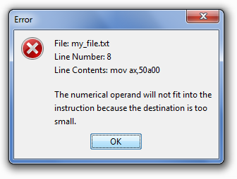

|
Sometimes formatting is strict; sometimes it's quite liberal. Here's what you need to know to avoid getting a syntax error thrown in your face. Things You Can Do 1. There is no case-sensitivity: you can mix and match capitalization as you wish. The Assembler completely ignores capitalization when analyzing assembly code. What actually happens is that all capital letters are converted to lowercase before assembling. Everything from that point onwards is considered lowercase. 2. You may use whatever amount of whitespacing you want, including tabs and spaces. Blank lines are ignored. The following ways of writing MOV EAX,ECX are all fine: MOV EAX,ECX mov eax,ecx MoV EaX , eCxHowever, this is not okay: M O V eax,ecx ;Splitting up the characters in MOV causes problems
3. You may put the offset statement anywhere in your source code, as long as it's written on its own line. It can even be at the end of your file. However, for easy readability of your code, you should probably put it at the beginning.4. You may put the #define and #enddefine statements anywhere in your source code. You can even put multiple define blocks in your code: offset 405000 #define lawl=cats #enddefine MOV EDX,lawl #define cats=EAX #enddefineThe above code evaluates to MOV EDX,EAX. All defines are evaluated before parsing of the code begins, regardless of where the define blocks are placed. Things You Can't Do 1. You cannot use weird or odd-numbered multipliers inside your memory operands. Valid multipliers only include 1,2,4, and 8. This will give you an error: JMP DWORD [EAX*5 + 404000]
Rather than EAX*5, you should instead use EAX*4 + EAX.
JMP DWORD [EAX*4 + EAX + 404000] //This works.2. You can't use the decimal or ~ operator inside memory brackets. Just convert to hex first. Pointers and Memory Locations If you want to use a pointer to a DWORD, no size-specifier is needed: MOV [EAX],ECX If you want a pointer to a word, prefix the memory brackets with WORD: MOV WORD [EAX],CX If you want a pointer to a byte, prefix the memory brackets with BYTE: MOV BYTE [EAX],CL You are also allowed to use MOV DWORD [EAX],ECX, even though the DWORD part is actually not needed. You should always be explicit about the sizes of memory operands whenever possible, especially when dealing with pointers to bytes and words. MOV [4a5adc],AL //Does not work. Will become MOV [4a5adc],EAX. MOV BYTE [4a5adc],AL //Works. MOV AX,[48BB00] //Works, but not recommended. MOV AX,WORD [48BB00] //Recommended way of writing this instruction.In some rare cases, the Doukutsu Assembler is able to accept QWORDs (64-bits). CMPXCHG8B QWORD [EDX+ECX] //This will work fine.Don't use PTR DS: and PTR SS: Avoid using PTR DS: and PTR SS: notation. Each instruction variation has a default segment register it uses for memory operations. PTR DS: and PTR SS: are actually ignored by the Assembler and will just clutter your code. CMP EAX,[ECX] ;Good. Uses DS by default. CMP BX,WORD [EBP-8] ;Good. Uses SS by default. CMP EAX,DWORD PTR DS:[ECX] ;Works, but PTR DS: is unnecessary. CMP BX,WORD PTR SS:[EBP-8] ;Works, but PTR SS: is unnecessary.If you're in a situation where you really need to specify a different segment register, use prefixes to do it. Error? An error message generated by the Assembler looks something like this:  The above error shows that you are trying to do MOV AX,50A00 but 0x50A00 is too big to fit into AX. To fix your error, open the Doukutsu Assembler again and press Ctrl+G. Notice that the error message gave you a line number. Just type in the line number and you'll get to the line where the error occurred. If you really can't figure out what's wrong or why the Assembler isn't accepting your code, feel free to drop me a PM or VM. If you accidentally closed the message box without seeing what happened, you can usually look in the file error.log, which keeps a copy of the error messages. Table of Contents |